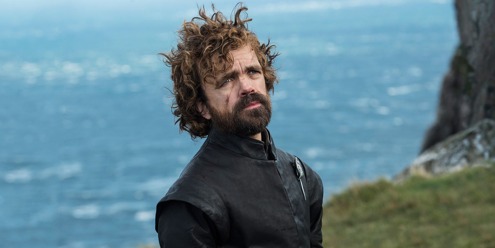

tyron

Tyrion Lannister es el tercer hijo de Lord Tywin Lannister y Lady Joanna Lannister, y hermano menor de los mellizos Cersei y Jaime. Es apodado el Gnomo y Mediohombre debido a su enanismo.
Nacido en 273 d.C. en Roca Casterly, Tyrion fue el tercer hijo de Lord Tywin Lannister y Lady Joanna Lannister. Tuvo dos hermanos mayores, los gemelos Jaime y Cersei, quienes tenían nueve años a su nacimiento. Su madre murió durante el parto, dejando a su padre devastado y enfurecido con Tyrion, a quien acusa de ser el causante de la muerte de Lady Joanna y desprecia por ser deforme. Tyrion se encontró marginado de la vida regular de una familia, especialmente por parte de su padre y hermana, quienes abusaron psicológicamente de él durante su infancia.
Cuando Tyrion tenía trece años, él y su hermano Jaime rescataron a una campesina, Tysha, de unos bandidos. Mientras Jaime fue tras los bandidos, Tyrion se encargó de Tysha. Para su asombro, pareció que Tysha le encontraba atractivo y eventualmente, se acostaron juntos. Tyrion se enamoró de ella y sobornó a un septón para que los casara en secreto. Durante su matrimonio, Tysha cantaba continuamente una canción llamada Las estaciones de mi amor, que prácticamente se convierte en el símbolo de su amor y es recordada, silbada o cantada por Tyrion a menudo.[5] Su felicidad duró sólo dos semanas, hasta que Tywin descubrió que Tyrion se había casado con la hija de un inquilino de sus tierras por amor. Su padre decidió enseñarle una dura lección; ordenó a Jaime que le dijera a su hermano que la muchacha era una prostituta que él había contratado para que Tyrion tuviera su primera mujer. Tysha fue llevada a Roca Casterly y Tywin hizo que Tyrion mirara mientras un grupo de guardias violaba a su mujer, entregándole a la chica un venado de plata por cada guardia. Luego, forzó a Tyrion a violarla a su vez, pero pagándole un dragón de oro, pues un Lannister vale más.[6] Este incidente traumatizó a Tyrion y dejó a Jaime lleno de culpabilidad.
Cuando cumplió dieciséis años, Tywin se rehusó a permitir que Tyrion viajara y viera el mundo (como sí habían hecho los dos hermanos menores de Tywin, Gerion y Tygett Lannister) temiendo que trajera más deshonra a la Casa Lannister y como regalo le hizo limpiar todos los desagües de Roca Casterly.